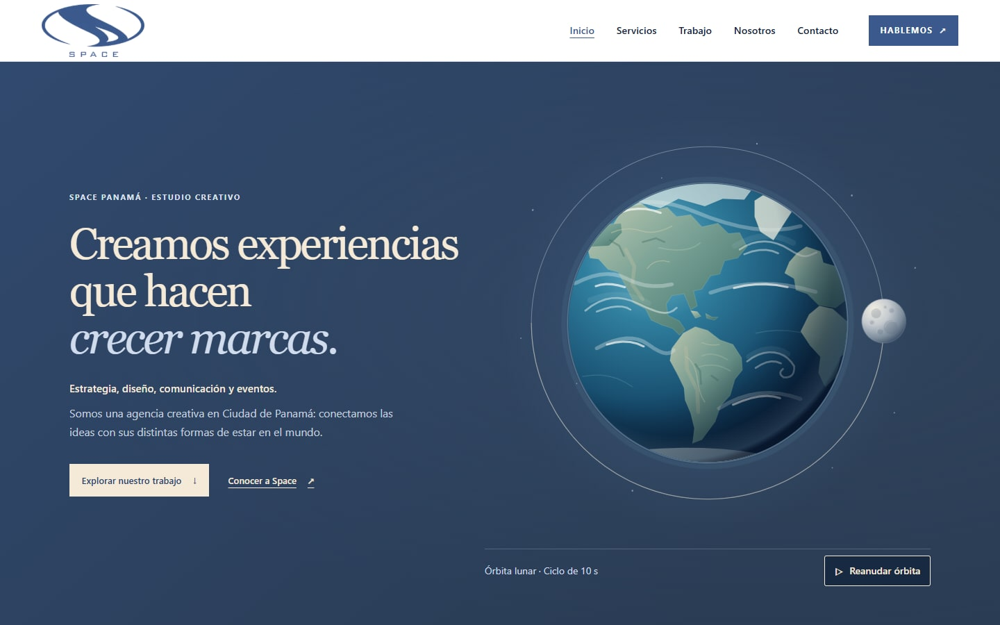
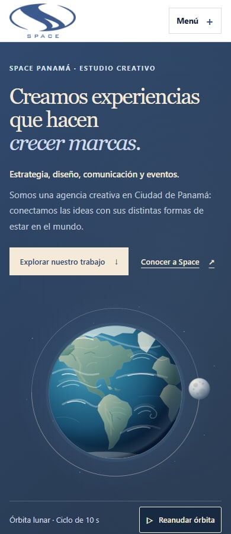
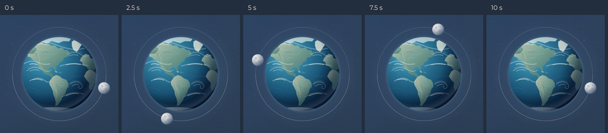
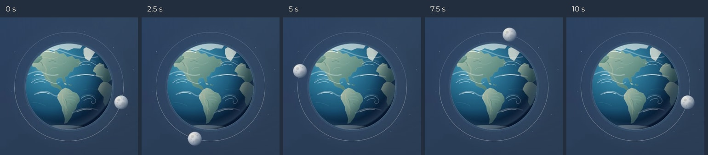
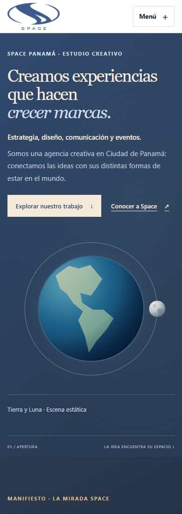
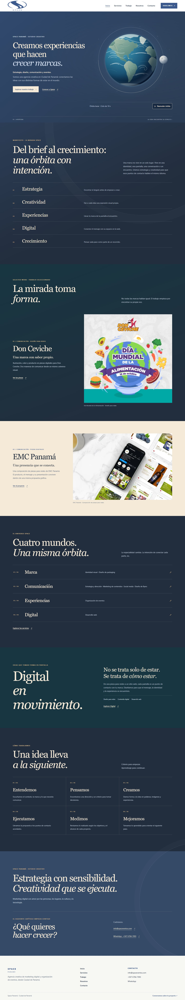
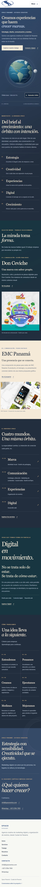

Composición actual
3 líneasEl mismo titular, sin recortar contenido.
401 pxTierra a 1440 px; antes 237 px.
224 pxTierra a 390 px; antes 147 px.


Movimiento real: un ciclo completo
Dos grabaciones de 12 segundos del navegador, sin autoplay ni audio. La órbita dura 10 segundos; la Luna debe volver al mismo punto entre 0 y 10 s. No son una animación reconstruida ni una secuencia movida manualmente. Los botones que se ven dentro del video forman parte de la grabación; para probarlos, usá el preview en vivo.


Alternativas y preservación
SSR y sin JavaScript: escena estática. Movimiento reducido: sin animación, también al cambiar la preferencia durante la visita. SVG ausente u oculto: fallback CSS de Tierra/Luna. La pausa funciona con teclado.
Manifiesto y los demás capítulos no se rediseñaron. Sin clientes en Hero, nuevos recursos remotos, dependencias, WebGL o scroll forzado.
Resultados, mediciones y límites. Chrome con viewport emulado no sustituye pruebas físicas o Safari/Firefox.

Ver el recorrido completo conservado

